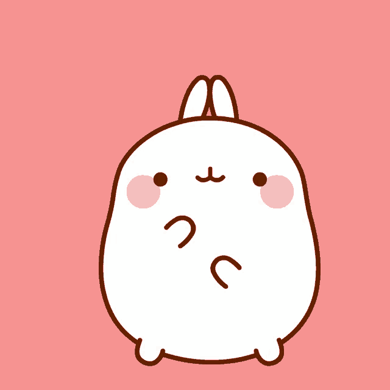

Je mange des carottes
titre titre avec du css
ici je met plein de texte carrote
ici je met plein de texte carrote
ici je met plein de texte carrote
Bonjour et bienvenue dans mon espace personel !
Je m’appelle Céleste. Petite lapine bien curieuse âgée de six mois.
Future star de youtube voici quelque un de mes exploits ici ou ici

Je suis une grande vadrouilleuse, aucuns coins de la maison ne me résiste. Du petite coin sombre derrière le frigo au sommet du canapé ! Ah si peut-être que je ne m’approche pas trop du four, on ne sait jamais. J’aime explorer mon environnement, je suis aussi curieuse que gourmande.